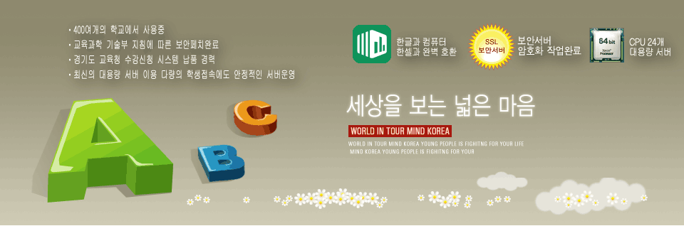

주요 서비스
가람소프트의 교육 솔루션을 만나보세요
CURRICULUM
교육과정 수강신청
선택중심의 교육과정을 받고 신반편성 및 교과서 신청을 할 수 있습니다.
자세히 보기
AFTER SCHOOL
방과후 수강신청
선착순 강좌신청과 출석부, 강의료계산, 강의만족도 조사 설문을 할 수 있습니다.
자세히 보기
FREE SEMESTER
중학교 자유학기제
학생들의 꿈과 끼를 찾게 도와드립니다. 다양한 진로탐색·체험활동이 가능하도록 교육과정을 편성해 보세요.
자세히 보기
REMOTE SUPPORT
원격 기술지원
멀리 떨어져 있어도 걱정하지 마세요. 원격으로 관리해 드릴 수 있습니다.
지원 받기